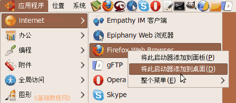
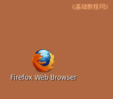
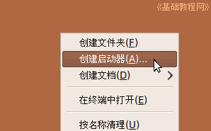
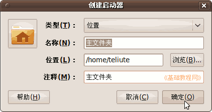
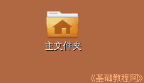
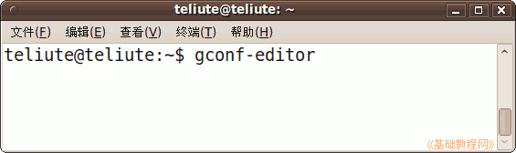
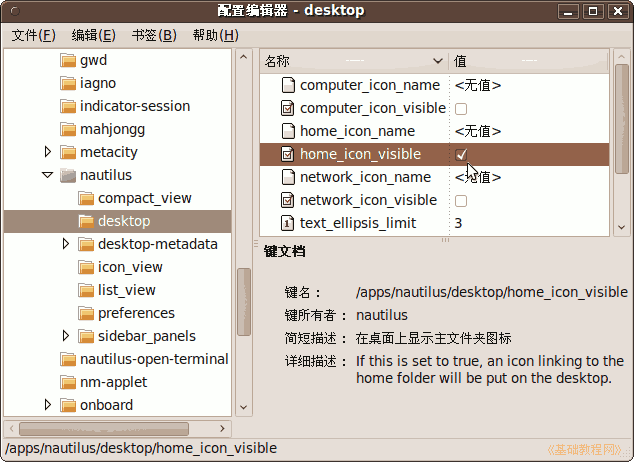
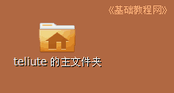

Ubuntu/GNOME 桌面程序指南
作者：TeliuTe 来源：基础教程网
六、创建桌面启动器 返回目录 下一课桌面也是一个文件夹，默认桌面上没有图标，可以自己添加或保存文件；
1、添加图标
1）点菜单找到 “应用程序 - Internet(互联网) - Firefox Web Browser”，瞄睢点右键，出来的上下文菜单里，选“将此启动器添加到桌面”；

2）这时候桌面上就会出来一个火狐的图标，点击也可以打开程序；

3）在桌面空白处点右键，选“创建启动器”命令，出来一个对话框；

4）在对话框里，“类型”旁边选“位置”，名称里输入“主文件夹”，位置点“浏览”找到自己的主文件夹，图标找一个 user-home 的图片文件，大至在 /usr/share/icons/Humanity/places/48 文件夹里，先打开这个文件夹；

5）点确定以后桌面上就出来一个图标，点击可以打开自己的主文件夹；

6）点菜单“应用程序 - 附件 - 终端” 打开命令窗口，输入 gconf-editor 然后按回车键；

7）在出来的对话框左侧，依次打开 apps - nautilus - desktop ，在右侧的面板里，找到 home_icon_visible 打勾选中；

8）桌面上也会出来一个主文件夹图标，其他的还有计算机、网络、回收站等等，都可以勾上看看；

本节学习了的添加桌面图标的基础知识，如果你成功地完成了练习，请继续学习下一课内容；
本教程由86团学校TeliuTe制作|著作权所有
基础教程网：http://teliute.org/
美丽的校园……
转载和引用本站内容，请保留版权信息和本站链接。